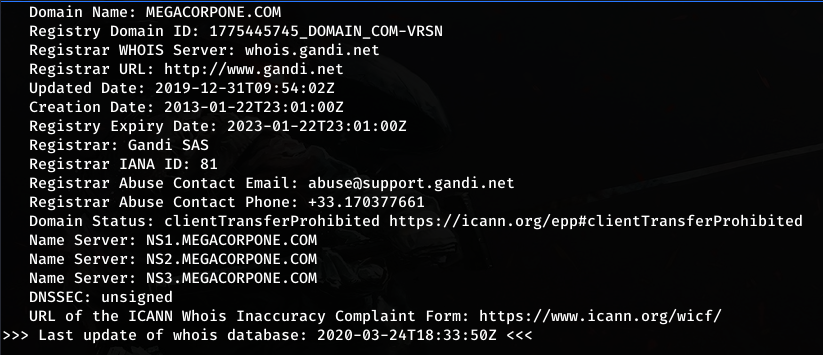
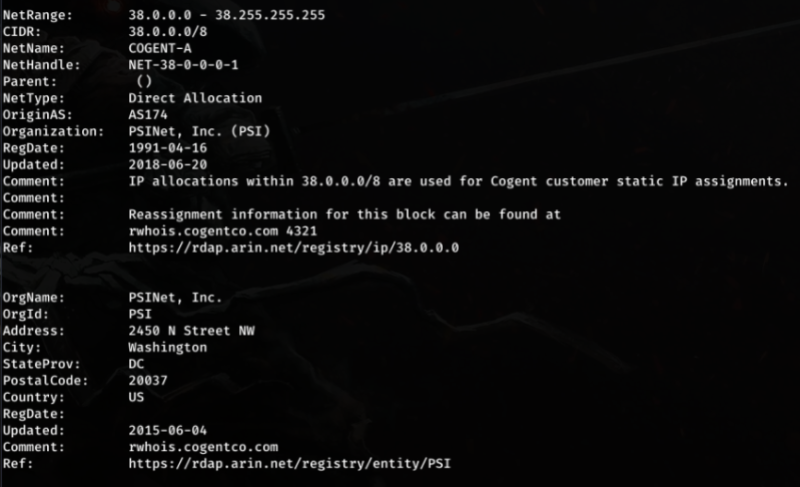
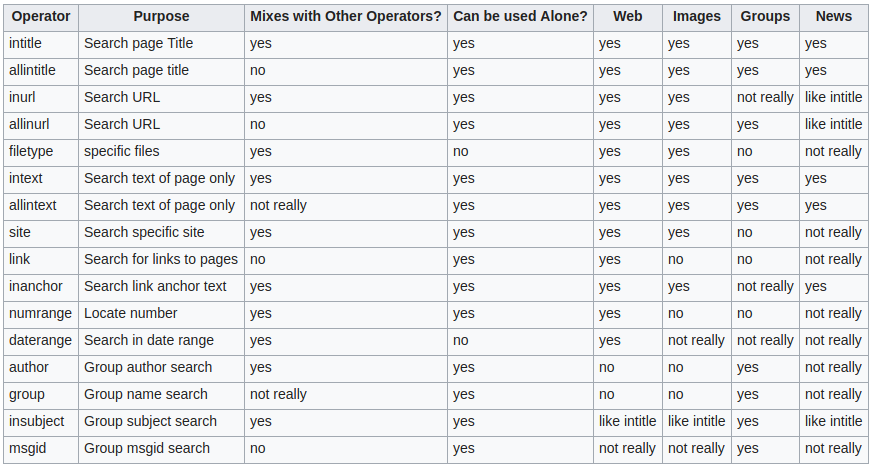
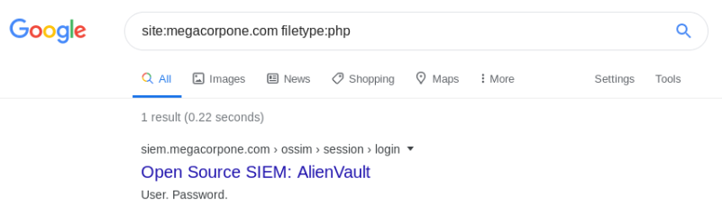
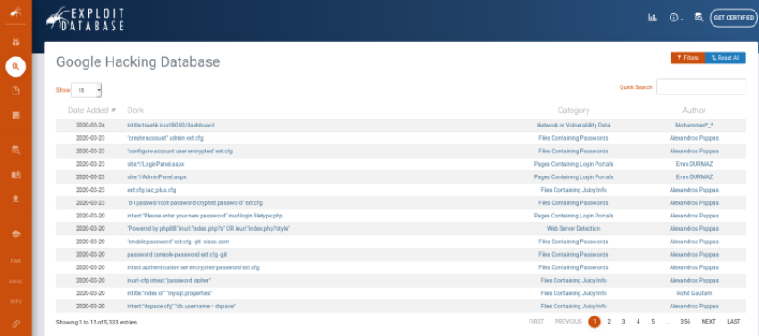
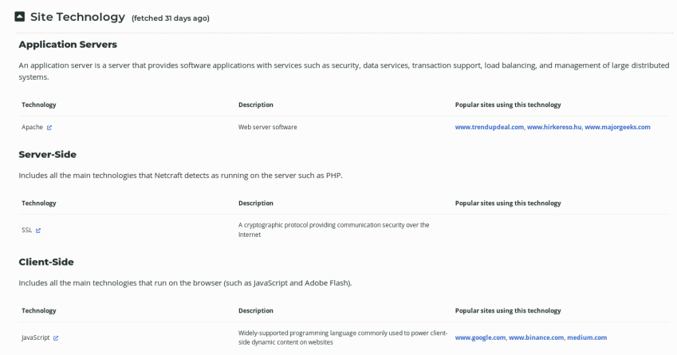

PASSIVE INFORMATION GATHERING
1. WEBSITE RECON
Doing recon on the target website without actually interacting with it. Look out for the contacts section or the about page for the email addresses and the patterns in them.
[Eg:] Consider the following website: www.megacorpone.com

[+] The pattern here is that the old employees found to have only the first name in their email addresses. Whereas, the newly hired employees tend to have lastname and their first name in them.
2. WHOIS ENUMERATION
The ‘whois’ is a tcp-based tool and a database that contains information about the website and the registrar. Now, issue the whois client, the name of the domain to recon.

[+] We got the name of the registrar and also his contacts.
[+] We also got the name of the nameserver.
REVERSE WHOIS LOOKUP: In addition, the whois client can also perform the lookup on a given IP address. On performing a reverse lookup scan for the below specified IP, we get to know who is hosting the IP address.

3. GOOGLE HACKING
Google Hacking is the term refers to the process of finding or uncovering critical information, vulnerabilities and misconfigured servers using google search operators. In this technique, we use clever strings and operators to refine the search results based on our search queries.
[+] Some of the common operators:

Most of the time, searching for a filetype, using ‘filetype’ operator combined with the ‘site’ operator, gives the unintended or exposed filetypes such as '.pl', ‘.jsp’, ‘.cfm’ could expose the perl, java server pages and adobe cold-fusion which should only be available to the internal networks.

This operator will fetch all the php filetypes from the site ‘megacorpone.com’.
Using ‘-’ sign will exclude the filetype from the query results.
The ‘intitle’ operator combined with ‘index of /’ will fetch results with ‘index of’ in the title and the parent directory ‘/’ in the contents.
Wrapping up the Google hacking with this Exploit database for Google Hacking. It has some more advanced google hacking queries that can sometimes reveal major misconfigurations and vulnerabilities.
4. NETCRAFT
Netcraft is an internet services company that provides web portal for various information gathering techniques.
[Note:] However, this technique of information gathering is still considered as passive, as we're not directly interacting with the target.
[site:] www.netcraft.com
Search by DNS: www.searchdns.netcraft.com
Each search will provide us the site report which initially contains the registrar informations, followed by the technologies used by the domain.
To be continued in Passive Information Gathering - 2!